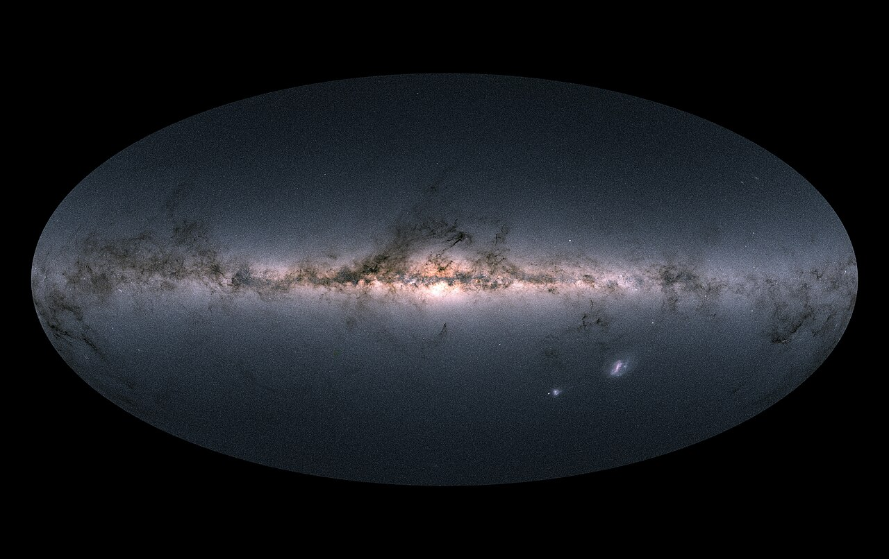
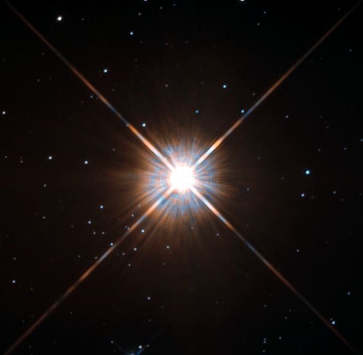

동기 유발
밝은 별은 가까운 별일까?
교과서 p. 54학습 목표
- 별의 시차와 밝기를 이용하여 거리를 측정하는 원리를 설명할 수 있다.
- 별의 거리를 측정하는 다양한 방법을 비교·평가할 수 있다.

ESA/Gaia/DPAC, CC BY-SA 3.0 IGO

ESA/Hubble & NASA, CC BY 4.0
밤하늘에서 가장 가까운 별 프록시마 센타우리는 맨눈으로 보이지도 않는다(11등급).
반면 1등급 데네브는 2600광년이나 떨어져 있다. 별까지의 거리는 어떻게 잴까?
반면 1등급 데네브는 2600광년이나 떨어져 있다. 별까지의 거리는 어떻게 잴까?
'겉보기 밝기 = 실제 밝기 + 거리'라는 두 변수 문제임을 인식시키면, 시차(기하학)와 밝기(광도) 두 방법의 필요성이 자연스럽게 나옵니다. 운영안 3차시(연주시차 1 / 등급·거리지수 1 / 데이터 탐구 1).
핵심 개념 1
연주시차로 별의 거리 재기
교과서 p. 54(1) 시차와 연주시차
- 시차: 관측 위치가 달라질 때 가까운 물체가 먼 배경에 대해 이동해 보이는 각. 한 눈씩 감고 엄지를 보면 엄지가 움직여 보이는 것과 같다.
- 연주시차(p): 지구가 공전하며 6개월 간격으로 관측한 별의 시차의 절반. 태양–지구–별이 이루는 각이다.
- 연주시차가 1″인 별까지의 거리를 1 pc(파섹)이라 한다. 거리는 연주시차에 반비례한다.
r (pc) = 1p (″) 1 pc ≈ 3.26 광년 ≈ 206 265 AU ≈ 3.09 × 10¹³ km
- 한계: 먼 별일수록 연주시차가 작아 측정하기 어렵다. 지상에서는 약 100 pc, 히파르코스 위성은 약 1000 pc, 가이아 위성은 수천 ~ 1만 pc 범위까지 잴 수 있다.
시뮬레이션 1연주시차 관측 시뮬레이터
왼쪽: 위에서 내려다본 지구 공전 궤도와 별(각도는 매우 과장). 오른쪽: 망원경으로 본 하늘. 가까운 별(빨강)이 먼 배경 별에 대해 1년 동안 작은 타원을 그리며 움직인다. 거리를 2배로 하면 흔들림은 어떻게 변할까?
핵심 개념 2
별의 밝기와 거리지수
교과서 p. 55 ~ 56(1) 등급과 밝기
- 등급이 작을수록 밝다. 1등급 차 = 약 2.5배, 5등급 차 = 정확히 100배의 밝기 차이이다.
- 별의 밝기는 거리의 제곱에 반비례한다. 거리가 10배 멀어지면 밝기는 1/100, 등급은 5등급 커진다.
- 겉보기 등급(m): 지구에서 보이는 밝기로 정한 등급
- 절대 등급(M): 별을 10 pc 거리에 두었다고 가정할 때의 등급 → 별의 실제 밝기(광도)를 비교할 수 있다.
m1 − m2 = −2.5 log I1I2 포그슨 공식 (I: 겉보기 밝기)
(2) 거리지수 · 밝기로 거리 재기
- 거리지수(m − M): 겉보기 등급과 절대 등급의 차. 별까지의 거리만으로 정해진다.
- m − M > 0 이면 10 pc보다 멀고, m − M < 0 이면 10 pc보다 가깝다.
- 절대 등급을 알 수 있는 천체(표준 촛불)를 찾으면 연주시차가 닿지 않는 먼 거리도 잴 수 있다.
- 주계열성: 스펙트럼(분광형) → H-R도 → 절대 등급 (분광 시차)
- 세페이드 변광성: 변광 주기 → 절대 등급 (II-05)
- Ia형 초신성: 최대 밝기 절대 등급 약 −19.3 (II-05)
m − M = 5 log r − 5 ⟺ r = 10(m − M + 5)/5 pc
시뮬레이션 2같은 별을 멀리 옮기면? 거리지수 계산기
거리 축은 로그 눈금(1 pc ~ 10 000 pc). 거리가 10배 늘 때마다 겉보기 등급이 정확히 5씩 커지는지 확인하자. 맨눈 한계(약 6등급)와 대형 망원경 한계(약 25등급)를 넘는 거리는?
데이터 탐구
가이아·히파르코스 시차로 이웃 별들의 H-R도 그리기
탐구 개요
실제 위성 측정값(연주시차, 겉보기 등급, 색지수)만 가지고, 거리 → 절대 등급이라는 새 변수를 직접 계산해 H-R도를 그린다. 겉보기 등급으로 그린 그림과 절대 등급으로 그린 그림을 비교하면, 왜 '거리'가 천문학의 핵심인지 데이터로 확인할 수 있다.
파생 변수 계산시차(mas, 1/1000″) → 거리(pc) = 1000 / 시차 → 절대 등급 M = m − 5 log r + 5. 표의 빈칸을 채우듯 '계산' 버튼을 눌러 열을 만든다.
두 그림 비교색지수(B−V)–겉보기 등급 그림과 색지수–절대 등급 그림을 번갈아 보며 무엇이 달라지는지 찾는다.
무리 짓기H-R도에서 주계열성, 거성·초거성, 백색 왜성 무리를 찾고, 각 별을 분류한다.
오차 생각하기시차 오차가 10%일 때 절대 등급 오차는 얼마인가? 먼 별일수록 왜 불확실해지는가?
데이터 랩태양 주변의 밝은 별·가까운 별 31개
별 위에 마우스를 올려 보자.
가로축: 색지수 B−V(작을수록 푸르고 뜨거움). 세로축은 위로 갈수록 밝다(등급이 작다). 시차는 Gaia DR3 또는 Hipparcos(밝은 별) 값을 반올림한 것이다.
📋 데이터 표 시차 단위 mas = 0.001″
분석 질문
1. 겉보기 등급으로 그린 그림과 절대 등급으로 그린 그림은 어떻게 다른가? 그 까닭은?
겉보기 등급 그림에서는 점들이 흩어져 규칙이 보이지 않지만, 절대 등급 그림에서는 왼쪽 위 ~ 오른쪽 아래의 주계열, 오른쪽 위의 거성·초거성, 왼쪽 아래의 백색 왜성 무리가 나타난다. 겉보기 등급에는 거리의 영향이 섞여 있기 때문에, 거리를 보정해야 별의 실제 성질(광도–온도 관계)이 드러난다.
2. 데네브와 프록시마 센타우리를 비교해 보자. 겉보기 밝기와 실제 광도는 어떻게 다른가?
데네브는 겉보기 등급 1.25, 시차 2.31 mas → 거리 약 430 pc로 절대 등급 약 −6.9(태양의 약 5만 배). 프록시마는 겉보기 11.1등급, 거리 1.30 pc로 절대 등급 약 15.6(태양의 약 1/20000). 겉보기 밝기만으로는 실제 광도를 판단할 수 없다.
3. 데네브의 시차는 2.31 ± 0.32 mas(히파르코스)이다. 거리와 절대 등급의 불확실성은 얼마인가?
시차 1.99 ~ 2.63 mas → 거리 약 380 ~ 500 pc → 절대 등급 약 −7.3 ~ −6.6으로 약 ±0.3등급의 불확실성이 생긴다(시차 상대 오차 14%). 실제로 다른 방법으로는 약 800 pc라는 추정도 있을 만큼 데네브의 거리는 불확실하다. 시차가 작은(먼) 별일수록 같은 측정 오차가 거리에 큰 상대 오차를 만들기 때문에, 먼 천체는 표준 촛불 방법을 함께 쓴다.
형성 평가
개념 확인 문제
그림·자료 출처
사진: ESA/Gaia/DPAC, ESA/Hubble & NASA (Wikimedia Commons 경유). 별 자료: ESA Gaia DR3, Hipparcos(새 환원) 카탈로그와 SIMBAD의 값을 반올림한 교육용 표본입니다. 시뮬레이션은 직접 만들었습니다.